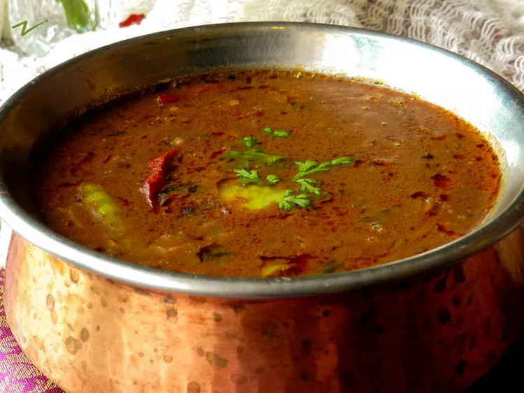

Dal Makhani

Ingredients
- Whole black lentils (sabut urad dal) - 1 cup
- Red kidney beans (rajma) - 1/4 cup
- Water - 3 cups
- Butter - 3 tbsp
- Oil - 1 tbsp
- Cumin seeds - 1 tsp
- Asafoetida - 1/4 tsp
- Onion - 1 large
- Tomato - 2 large
- Ginger - 1 inch
- Garlic - 4 cloves
- Green chilli - 1
- Red chilli powder - 1 tsp
- Coriander powder - 1 tsp
- Cumin powder - 1/2 tsp
- Garam masala - 1/2 tsp
- Salt - to taste
- Cream - 1/4 cup
- Kasuri methi - 1 tsp
Instructions
- Wash and soak the whole black lentils and red kidney beans in water for 8 hours or overnight.
- Drain the water and add the lentils and beans to a pressure cooker along with 3 cups of water.
- Pressure cook for 6-7 whistles or until the lentils and beans are cooked.
- Heat butter and oil in a pan.
- Add cumin seeds and asafoetida.
- Add chopped onion and saute until golden brown.
- Add ginger, garlic, and green chilli and saute for 2 minutes.
- Add chopped tomato and cook until soft.
- Add red chilli powder, coriander powder, cumin powder, garam masala, and salt.
- Cook until the oil separates.
- Add the cooked lentils and beans along with the water to the pan.
- Simmer for 10 minutes.
- Add cream and kasuri methi.
- Simmer for another 5 minutes.
- Serve hot with rice or naan.